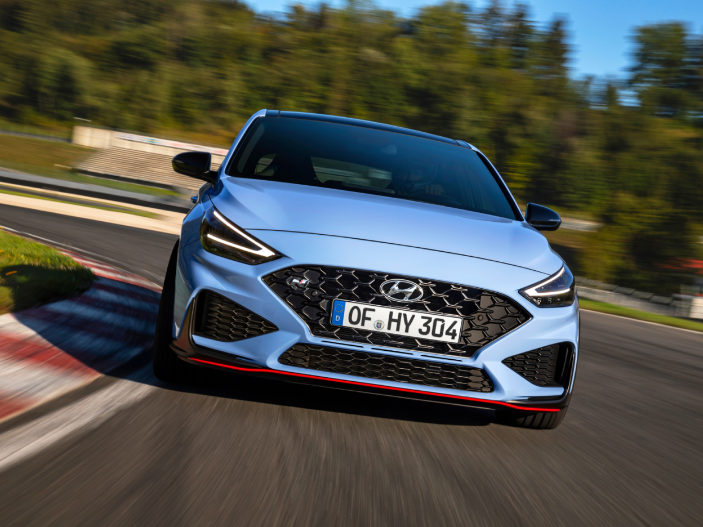
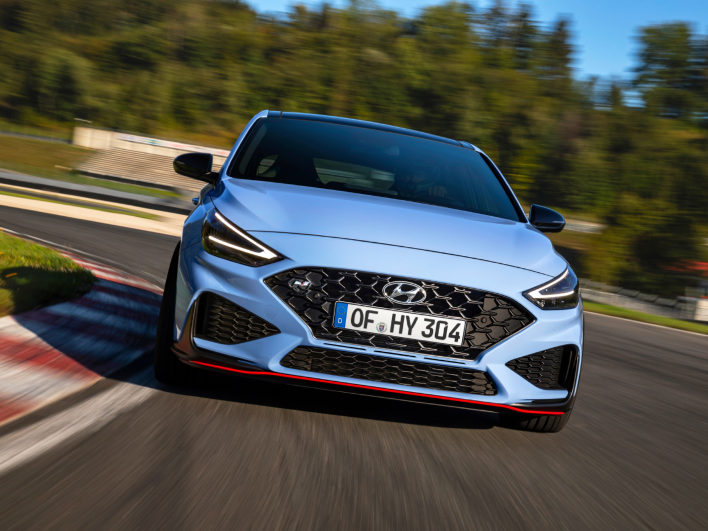
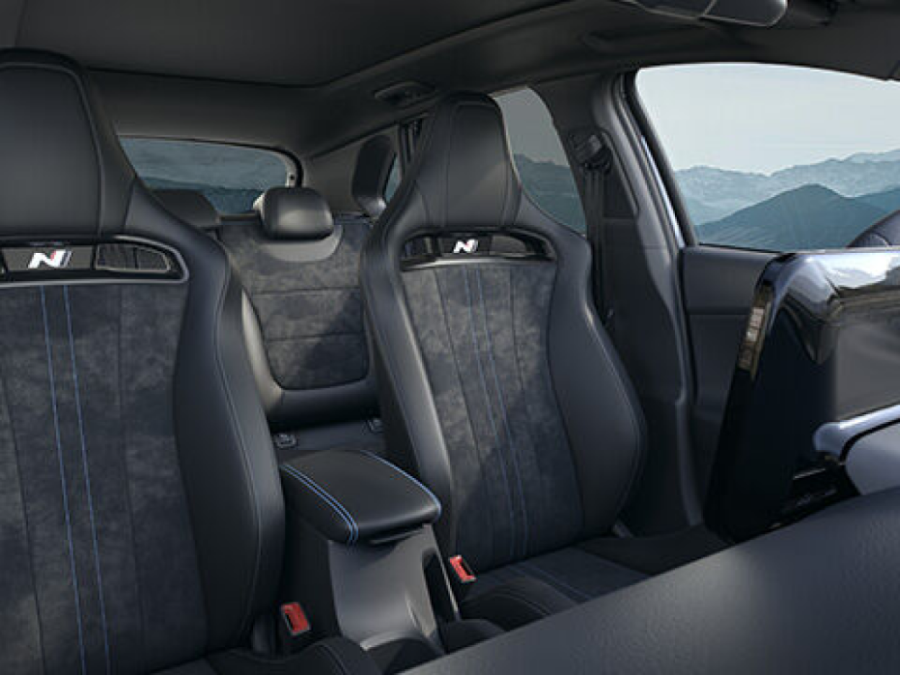
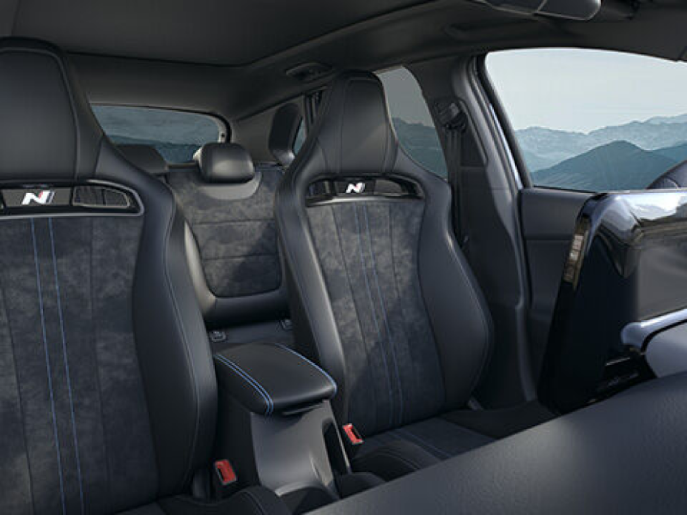
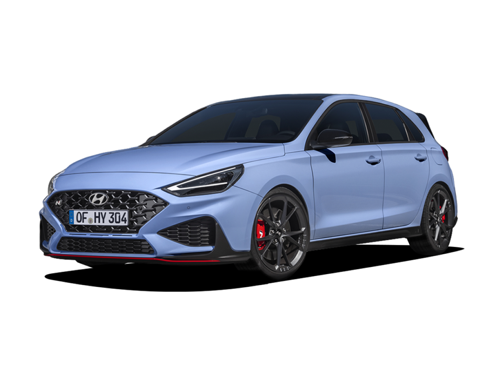
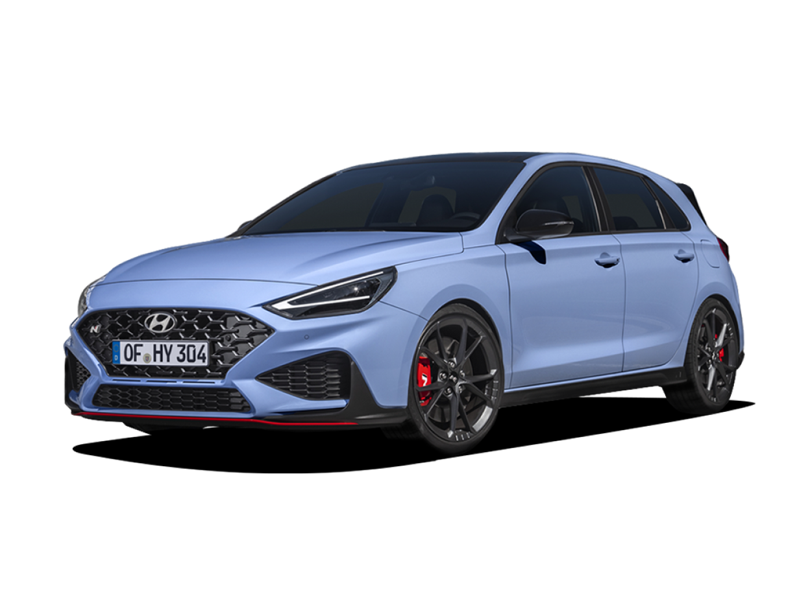

i30 N
순간을 바꾸다

Overview
새로운 i30 N의 하이라이트
패들 시프터가 장착된 습식 8단 듀얼 클러치 변속기와 경량 단조 알로이 휠 적용을 통해 퍼포먼스 팩의 향상된 출력과 토크를 제공합니다.

Performance
한 차원 높아진 성능
2.0 T-GDI 엔진은 280PS에 플랫 파워가 크게 증가해 낮은
RPM에서 더 많은 토크와 출력을 제공합니다.
이를 통해 높은 반응성, 향상된 가속, 그리고 보다 즐거운
주행을 보장합니다.
순간을 바꾸세요.
i30 N은 성능, 감성, 개성에 초점을 맞춘 디자인으로 새롭게 태어났습니다. 또한 더 가벼운 소재를 사용하여 민첩성과 핸들링이 향상되었습니다.


가벼운 구성 요소로 향상된 성능
새로운 고성능 N 라이트 시트와 19인치 단조 알로이 휠을 통해
중량이 감소되고
성능과 핸들링이
향상되어 더욱 민첩한 주행 경험을 만끽할 수 있습니다.
N 8단 습식 듀얼 클러치 변속기(N DCT)
새로운 i30 N이 갖추어야 할 추가 기능: 패들 시프터와 새로운 N 성능을 갖춘 습식 8단 듀얼 클러치 변속기는 보다 스포티한 경험을 선사합니다.
 

완전히 새로워진 N DCT
최초 제공: 패들 시프터와 새로운 N 퍼포먼스 기능을 갖춘 습식 8단 듀얼 클러치 변속기는 보다 스포티한 경험을 선사합니다.


손 끝에서 느껴지는 빠른 변속
레이싱에서 영감을 받은 패들 시프터를 사용하여 빠르고 간편하게 기어를 변경할 수 있습니다. 또한 패들 시프터가 스티어링 휠에 장착되어 코너링 시 더 효율적으로 변속할 수 있습니다.
Design
역동적 퍼포먼스에 초점을 맞춘 향상된 외형 디자인
새로워진 i30 N의 디자인은 '퍼포먼스, 감성, 표현' 세 단어로 설명할 수 있습니다. 스타일을 넘어 퍼포먼스는 i30 N만을 위해 적용된 변경 사항을 정의합니다.

전면
눈에 띄는 신규 헤드램프 디자인


측면
스포티한 디테일이 빛나는 디자인


후면
후면 스포일러와 삼각형 브레이크등


눈에 띄는 신규 헤드램프 디자인
스타일리시한 새로운 조명 디자인은 통합된 V자형 주간 주행등, 그리고 최신 LED 기술이 적용된 더욱 슬림해진 헤드램프를 포함합니다.
스포티한 디테일이 빛나는 디자인
새로워진 i30 N은 모든 각도에서 강력한 인상을 남깁니다. 측면의 유광 블랙 도어 미러와 바디 컬러 도어 핸들은 Hyundai N의 무광택 사이드 스커트와 조화를 이뤄 매우 스포티한 외관을 연출합니다.
후면 스포일러와 삼각형 브레이크등
리프트를 최소화하고 주행의 즐거움을 극대화합니다. 삼각형 브레이크등이 통합된 후면의 리어 스포일러는 다운포스를 높여 고속 코너링 시 더 강한 접지력을 제공합니다.
새로운 리어 범퍼
스포티하고 강력한 외관으로 디자인되었습니다. 공격적으로 조각된 새로운 리어 범퍼는 레이싱 레드 컬러의 캐릭터 라인과 특대 크기의 새로운 배기 파이프 위에 장착된 안개등이 특징입니다.
더 커진 후면 배기 파이프
새로워진 i30 N의 고성능 외관이 돋보이도록 듀얼 싱글 배기 파이프를 크게 확장했습니다. 선택지에 중간은 없습니다.
업그레이드된 성능 중심의 운전석.
진정으로 자동차를 사랑하는 사람들이 자동차 애호가를 위해 제작한 새로운 i30 N은 날렵하고 스포티한 인테리어로 시선을 사로잡고 흥미를 불러일으킵니다. 운전석은 편안함 만큼이나 제어 기능이 중요합니다. 이는 새로운 N 라이트 시트와 더 커진 터치스크린을 통해 실현되었습니다.
N 스티어링 휠.
가죽으로 마감된 독점적인 퍼포먼스 블루 스티치와 N 로고가 돋보이는 N 스티어링 휠은 N 모드 및 N 그린 시프트(NGS, N Grin Shift) 전용 버튼과 같은 주행 성능 기능을 간편하게 이용할 수 있습니다.


N 클러스터.
엔진 오일 온도, 토크, 터보 부스트를 한눈에 확인하세요. 변속 타이밍 기능은 트랙 주행을 지원합니다. 가변 LED 레브 카운터의 레드 존은 오일 온도에 따라 변화합니다.
 

N 라이트 시트 - 전문 레이서처럼 탑승.
프리미엄 가죽과 Alcantara® 소재로 마감된 가벼운 고성능 모노폼 시트는 반짝이는 N 로고가 각인되어 있으며, 눈에 띄는 볼스터로 탁월한 측면 지지력을 제공합니다.


N DCT 시프터.
N DCT 시프터는 N 로고, 스포티한 메탈 액센트, 퍼포먼스 블루 컬러의 레이싱 라인 및 스티치, 가죽 인서트를 갖추고 있어 더욱 강력한 그립감과 모터스포츠의 감성을 전달합니다.
Specification
i30 N
제원
 

- 엔진
- 2.0T GDi
- 변속기
- 6 MT
- 출력 (PS)
- 250
- 최대 토크 (Nm)
- 353
- 최고 속도 (km/h)
- 250


- 엔진
- 2.0T GDi
- 변속기
- 6 MT 또는 N DCT
- 출력 (PS)
- 280
- 최대 토크 (Nm)
- 392
- 최고 속도 (km/h)
- 250


Related

The all-new IONIQ 5 N

IONIQ 5 N 2024 World Performance Car Award Winner

Mastering Japanese tracks, one drift at